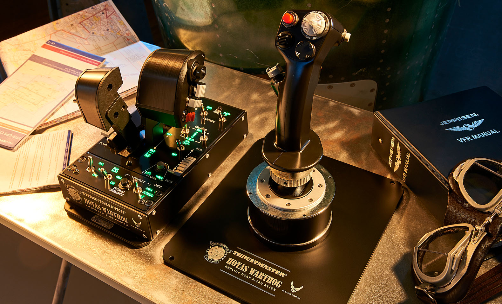

Controls borrowed from the cockpit
Most games work with a standard gamepad, but some genres have their own specialised hardware such as flight sticks, steering wheels and pedals[1]. Companies like ThrustMaster focus on exactly this kind of product[2].
HOTAS stands for Hands On Throttle And Stick. It is a design principle from military aircraft: the pilot operates radar, weapons and other systems with switches placed on the throttle and the stick, so the hands never leave the main flight controls[3]. Flight simulators copy this layout because it is both realistic and practical.

The link to real aircraft is more than a metaphor. In 1997 ThrustMaster released a PC joystick whose design mirrors a hand controller the company built for NASA’s Space Shuttle programme[4].
Walking in virtual reality
In VR, the hardest movement to reproduce is walking. Omnidirectional treadmills let users move through 360 degrees in a virtual space while staying in place[5]. The Virtuix Omni is a consumer example: a platform with a low-friction surface, used with special shoes that let the feet slide to simulate walking[6].

Niche devices add realism but also cost, space and a learning curve. That is why a gamepad is still the default for most players.